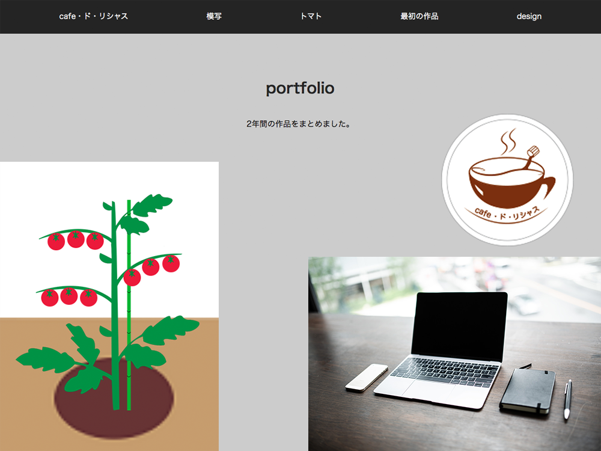
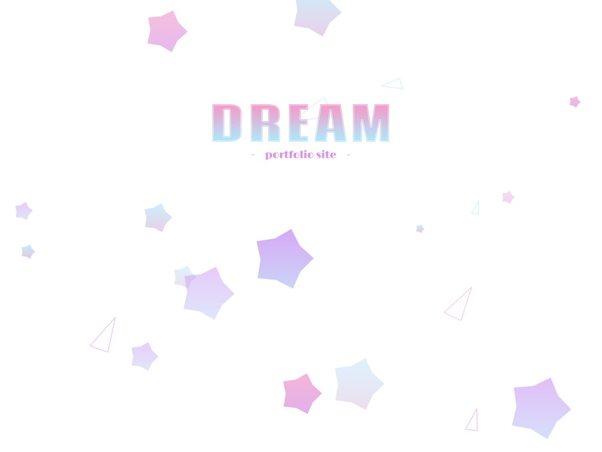
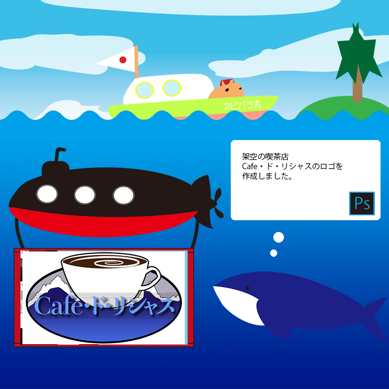
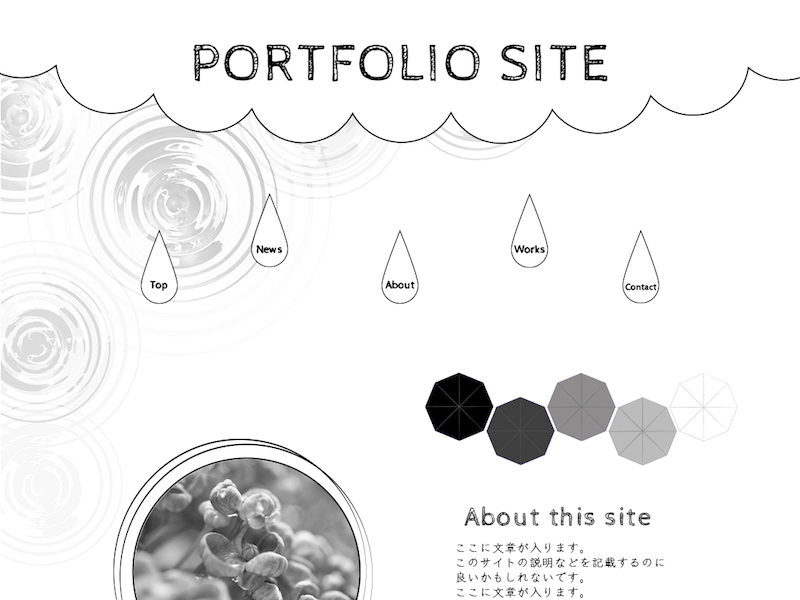
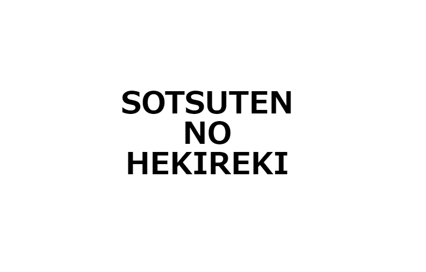
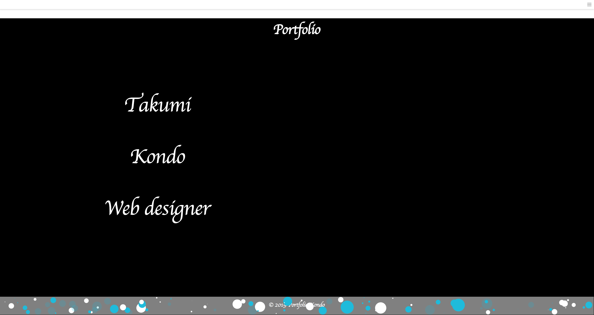

Room
No.318
私たち2年間の勉強は、主にここ318室で行われました。
7人の仲間たちと先生方と、ときに談笑しつつ、Web制作に必要な技術を学んだ時間。キーボードのタイピング音をBGMに、己が見据える将来に向けて切磋琢磨して過ごしたこの時間は、気づけばもう終わりを迎えようとしています。
この教室で学んだことを、私たちは忘れないでしょう。
Portfolio
- future
- 
- 2年間で作成したwebサイトやバナー、ポスターのデザインをまとめました。
webサイトは綺麗で見やすいように作成し、ポスターは幻想的且つかっこよさを意識しました。動きがあるwebサイトもあるので動きに注目して見て下さい。
小池浩晃
- DREAM
- 
- 本人は腐っているけど夢もあるのでゆめかわ100％デザインのパララックスを使ったポートフォリオ。
Webサイトがメイン。
渡邊由佳
- カピバラ丸
- 
- 二年間かけて作った作品を潜水艦が運ぶ形式にしました。
上ではのんびりとカピバラ船長が島を目指して航海にでます。海の動物たちの動きにも注目です。
安部将道
- Works

- 1年次からの2年次までの作品の一部と自主学習した物をまとめました。htmlではseoを意識して記述しました。
是非見てください！
石塚遼
- Portfolio Site
- 
- この2年間で制作してきた、Webサイトをはじめとしたデジタル作品やアナログ作品を展示しています。
インデックスページは手描きのイラストをイメージしています。モノクロで一見味気ないですが、よく見るとある仕掛けが施されて
安部風紗子
- SOTSUTEN NO HEKIREKI
- 
- お塩ひとつまみ。
蒲生博崇
- ぽーとふぉりお
- 
- 2年間Webクリエーター科で学習した内容や授業内の課題をまとめたものを一つにしてサイトにまとめました。
portfolio内には１年次、２年次で作成した順番に載せてあるので作成したサイトのスキルアップを見て頂けたら楽しめると思います。よろしくお願いします！
近藤匠